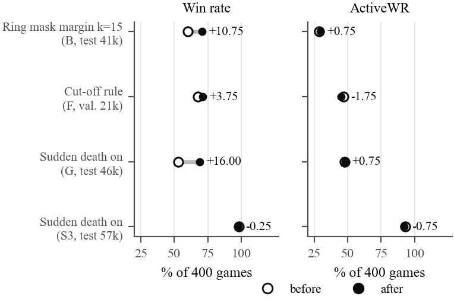
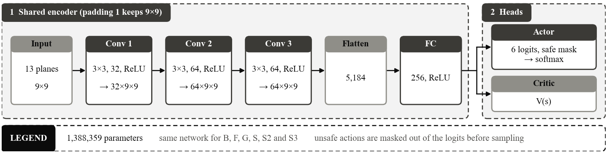
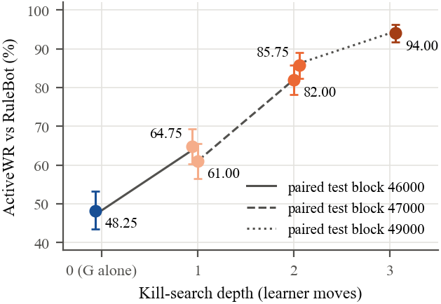
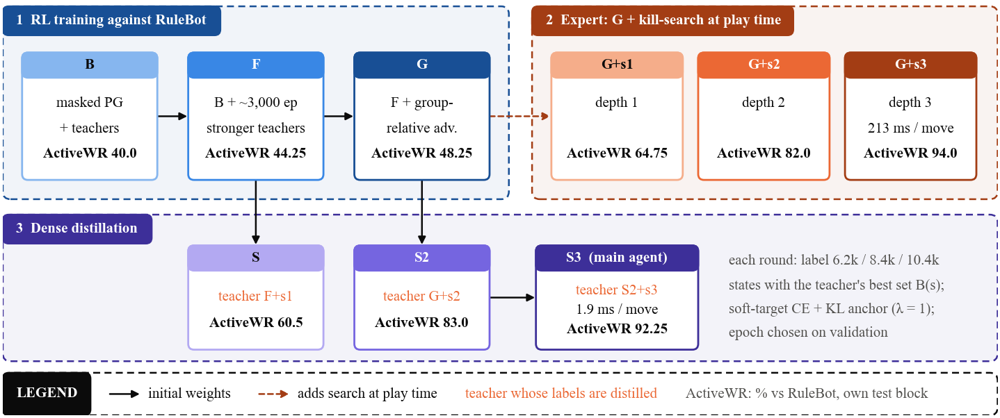
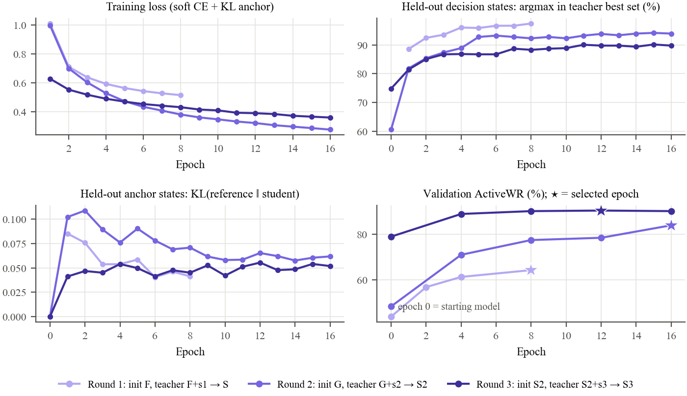
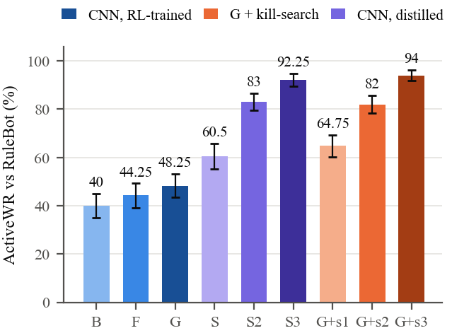
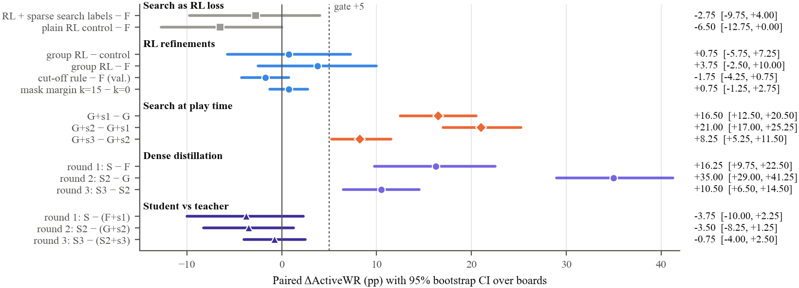
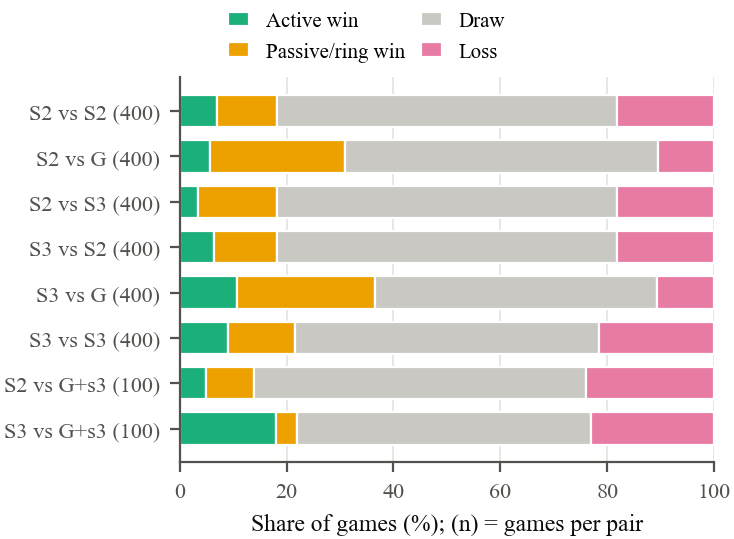
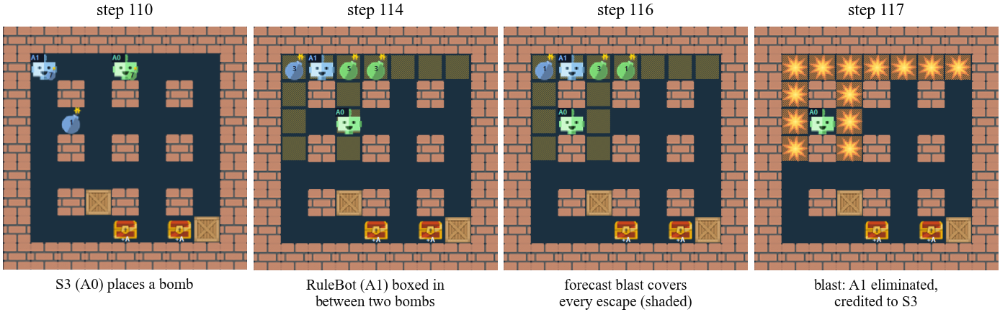
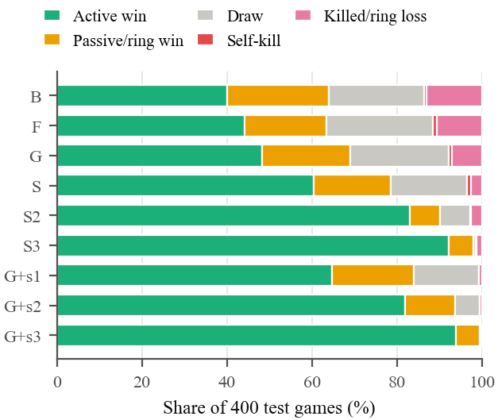

Môn học: Học tăng cường / Trí tuệ nhân tạo ứng dụng
Nhánh danh/sd9-s3-distillation · Agent chính: S3
Ngày 28/10/2026
Nguồn số liệu: RESULTS.md, IMPROVEMENTS.md, INSIGHTS.md, BAO_CAO_TONG_KET.md
Project xây dựng một agent chơi Bomberman đối kháng (1 đấu 1, bàn 9×9) bằng học tăng cường. Agent được đánh giá khi đấu với RuleBot, một đối thủ viết tay theo luật cố định, và khi đấu với chính các CNN do project train ra. Mục tiêu cuối: một mạng CNN thuần, mỗi bước chỉ chạy một lần, nhưng chơi mạnh gần bằng một agent có search tốn kém.
Kết quả chính: agent S3 đạt ActiveWR 92,25% khi đấu RuleBot trên seed test 57000 (chỉ dùng một lần). Checkpoint xuất phát B chỉ đạt khoảng 33%, bản RL tốt nhất không search (G) đạt khoảng 49%. S3 kém trần search ba nước (G + search3, 94,0%) chỉ 1,75 điểm, khoảng tin cậy chứa 0, nhưng nhanh hơn khoảng 70 lần.
BombermanFFAEnv (NumPy): bàn 9×9, 2 agent ở hai góc, cột cứng ở ô (chẵn, chẵn), tối đa 500 bước.WR (tỉ lệ thắng) bị tăng giả khi đối thủ tự nổ hoặc chết vì vòng co, tức là thắng thụ động. Vì vậy chỉ số chính là ActiveWR: phần trăm trận thắng và có hạ gục đối thủ bằng bom của chính mình. Hình 1 minh họa vì sao hai chỉ số này tách nhau.

Mạng ActorCriticNet là một CNN nhận 13 kênh, xuất logits cho các hành động (di chuyển, đặt bom, đứng yên) và giá trị trạng thái. Hành động được lấy mẫu từ policy sau khi áp mask an toàn (argmax làm giảm mạnh chất lượng, xem mục 7).

Kill-search (kill_search.py) là bộ search lúc chơi: mô phỏng 12 bước tới, giả định đối thủ hành xử như RuleBot, và chọn nước đi dẫn tới một kế hoạch giết mà bản thân vẫn né được. Có ba biến thể: một nước, hai nước và ba nước (search nhiều nước hơn thì mạnh hơn nhưng chậm hơn).

Quy trình gồm bốn bước, lặp lại nhiều vòng:

Điểm quyết định so với các thử nghiệm đầu là nhãn dày: nhãn thưa (khoảng 0,9 nhãn/trận ở SD5.1) không đổi được hành vi đặt bom của CNN, còn nhãn dày ở mọi trạng thái có thông tin thì đổi được.

| Mốc | Agent | ActiveWR (%) | Seed test |
|---|---|---|---|
| Xuất phát | B (Phase C, MC actor-critic) | 32,75 | 32000 |
| RL nhánh bạn | F (~3000 ep từ B) | 44,25 | 43000 |
| RL + advantage theo nhóm | G | 48,25–51,0 | 45000, 46000 |
| Search một nước | G + search | 64,75 | 46000 |
| Search hai nước | G + search2 | 82,0 | 47000 |
| Search ba nước (trần) | G + search3 | 94,0 | 49000, 57000 |
| Chưng cất lần 1 | S (từ F + search) | 60,5 | 43000 |
| Chưng cất lần 2 | S2 (từ G + search2) | 83,0 | 48000 |
| Chưng cất lần 3 | S3 (từ S2 + search3) | 92,25 | 57000 |

Trên test 57000, S3 − S2 = +10,5 pp ActiveWR, CI95 [+6,5; +14,5], vượt gate. Phần tăng đến từ thắng chủ động: thắng thụ động −1,5 (CI chứa 0), hòa −6,25, ván ngắn hơn (131 so với 202 bước). Tắt sudden death cho kết quả gần như y hệt (+10,75), nên cải thiện không phụ thuộc vòng co.
S3 so với trần G + search3: −1,75 pp, CI95 [−5,0; +1,5], chứa 0. Tốc độ: S3 chạy một lần forward mỗi bước, còn search3 tốn 20–30 giây mỗi trận, chậm khoảng 70 lần.
S3 cũng được lặp lại trên ba train seed khác nhau (SD9-SEEDS, test 61000): cả ba seed đều đạt gate, S3 − S2 lần lượt +10,5; +9,0; +9,25 pp. Đây là bằng chứng độ ổn định tốt hơn so với một seed đơn lẻ.

Khi đối thủ là CNN (S2, G, S3) thay vì RuleBot, S3 vẫn hòa 53–64% số trận và ActiveWR chỉ 6,5–10,75%. Bốn probe được chạy để hiểu nguyên nhân:
| Probe | Câu hỏi | Kết quả |
|---|---|---|
| PDE, PDE2 | Agent mạnh nhất còn mạnh khi đấu CNN không? | G + search3 đấu CNN chỉ WR 19–44, hòa 50–70% |
| SD9.1 | S3 có bớt hòa hơn S2 không? | ActiveWR macro +3,33 [+1,25; +5,50], hòa −4,08; S3 vẫn hòa 53–64% (chưa đạt gate) |
| SD9.2 | Trận hòa có nước giết bị bỏ lỡ không? | Đoán đối thủ bằng CNN thật, chỉ 15,9% [9,9; 22,7] trận hòa có kế hoạch giết (0,2% trạng thái); giả định RuleBot thấy 90,3% |
| SD9.3 | Vòng co sớm hơn có tạo thắng chủ động không? | Không: ActiveWR −1,42…−0,17; 80–87% trận hòa thành "cùng chết khi vòng cuối lấp kín bàn" |

Giải thích: hai agent cùng dùng mask an toàn nên mỗi bên không bao giờ tự bước vào vùng nổ. RuleBot né theo luật cố định nên bẫy được; CNN né theo nhiều cách, hầu như luôn còn đường thoát. Do đó trong 1v1 trên 9×9 gần như không có cú giết chắc chắn, giống hai kỳ thủ mạnh hay hòa nhau. Vì thế khi đấu CNN, báo cáo dùng ActiveWR và tỉ lệ thua, không dùng WR.

Ghi nhận trung thực các kết quả âm cũng là một phần của project. Mỗi mục dưới đây có gate FAIL hoặc kết quả không giữ, ghi ở RESULTS.md:

SD10 (hướng A): chưng cất S3 + search3 thành S4, trong đó lúc thu dữ liệu search đoán đối thủ bằng chính CNN của đối thủ. S4 lúc chơi vẫn là CNN thuần. Code và test đã xong nhưng chưa chạy: mỗi trận đấu CNN tốn khoảng 10 phút và chỉ cho khoảng 2,7 trạng thái có nhãn, thu đủ dữ liệu cần khoảng 53 giờ. Theo SD9.2, mức lợi ích tối đa khi đấu CNN chỉ khoảng +10 pp và là ước lượng lạc quan, nên cần cân nhắc chi phí.
runs/sd9-20261023/train/epoch_12.pt (SHA 4185375f…69ed7).python evaluate.py --mode seeded --board_size 9 --num_agents 2 --num_episodes 400 --max_steps 500 --seed <seed> --device cpu --ac_model runs/sd9-20261023/train/epoch_12.pt --output <json>run_sd8a_distill.py (tạo S2), rồi run_sd9_distill.py collect | train | validate | test; lệnh đầy đủ ở SD9_GUIDE.md.probe_s3_cnn.py (SD9.1), probe_draw_kills.py (SD9.2), probe_sd_schedule.py (SD9.3). Mỗi runner có test test_*.py chạy bằng unittest.D:\anaconda\envs\torch\python.exe), CPU, 5 tiến trình song song.